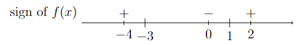
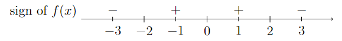

Solving Inequalities#
How to Solve an Inequality#
Solving an Inequality
In order to find all values of \(x\) such that \(f(x)>0\) or \(f(x)<0\), use the following procedure.
Step 1: Find all values of \(x\) such that \(f(x) = 0\) or \(f(x)\) is not defined.
Step 2: Use one of the following two methods to solve the inequality
Method 1: Use the values found to break up the number line into intervals and select one number from each interval to plug into \(f(x)\) to determine if \(f(x)\) is positive or negative on that interval.
Method 2: Use the values found to help draw the graph of \(f(x)\). Portions of the graph that are above the \(x\)-axis correspond to values of \(x\) where \(f(x)>0\) while portions of the graph that are below the \(x\)-axis correspond to values of \(x\) where \(f(x) < 0\).
Example 1#
Determine the values of \(x\) where \(f(x)\) is positive.
Find all values of \(x\) such that \(x^2 + 2x - 3 > 0\).
Step 1: Find all values of \(x\) such that \(x^2 + 2x - 3 = 0\).
Use the AC method to factor \(x^2 + 2x - 3\).
since \(3\) and \(-1\) are two numbers that multiply to \(-3\) and sum to \(2\). Now set each factor equal to zero and solve for \(x\).
Note that \(x^2 + 2x - 3\) is defined for all values of \(x\).
Step 2: Use one of the two methods to solve the inequality.
Method 1: Break up the number line
Use the values of \(x\) found in Step 1 to break up the number line and plug in one value from each interval into \(f(x) = (x+3)(x-1)\).
Since \(f(-3) = 0\) and \(f(1) = 0\), pick one value less \(-3\), one value between \(-3\) and \(1\), and one value greater than \(1\).
For example, since \(f(-4) = 5 > 0\), \(f(x) >0 \) for all \(x < -3\). And since \(f(2) = 5 > 0\), \(f(x)>0\) for all \(x > 1\). However, \(f(0) = -3 < 0\), and therefore \(f(x) < 0\) for all \(-3<x<1\).
The calculations of Method 1 are summarized in the following diagram.
Long Text Description
There is a number line with the numbers -4, -3, 0, 1, and 2 marked. The line is labeled “sign of f(x)”. Some of the points are marked with signs. -4 is marked positive. Zero is marked negative. 2 is marked positive. The rest of the numbers are not marked with a sign.
Therefore, \(x^2+2x-3 >0\) whenever \(x<-3\) or \(x>1\).
Method 2: Draw a graph
Sketch the graph of \(y=x^2+2x-3\) by drawing a parabola that opens upward and goes through the points \((-3,0)\) and \((1,0)\).
Long Text Description
There is a horizontal x-axis with the points -4, -2, and 2 marked. There is a vertical y-axis with no points marked. The graph of the concave up parabola y = x squared + 2x - 3. Its x-intercepts are marked with large black dots.
Finding values of \(x\) such that \(x^2+2x-3 > 0\) is equivalent to identifying the portions of the graph of \(x^2+2x-3\) that are above the \(x\)-axis.
Based on the graph shown above, \(x^2+2x-3 >0\) whenever \(x<-3\) or \(x>1\).
Example 2#
Determine the values of \(x\) where \(f(x)\) is negative.
Find all values of \(x\) such that \(\dfrac{x^2(x^2+3)}{(4-x^2)^3} < 0\).
Step 1: Find all \(x\) such that \(\frac{x^2(x^2+3)}{(4-x^2)^3} = 0\) or is not defined.
\(\frac{x^2(x^2+3)}{(4-x^2)^3} = 0\) whenever the numerator is equal to zero, which only happens when \(x=0\) (since \(x^2+3\) is never equal to zero).
\(\frac{x^2(x^2+3)}{(4-x^2)^3}\) is not defined whenever the denominator is equal to zero, which only happens when \(x=-2\) or \(x=2\).
Step 2: Use one of the two methods to solve the inequality.
Method 1: Break up the number line
Break up the number line at \(x=-2\), \(x=0\), and \(x=2\) and plug in one value from each interval to determine the sign of \(f(x) = \frac{x^2(x^2+3)}{(4-x^2)^3}\) on that interval.
The calculations of Method 1 are summarized in the following diagram.
Long Text Description
There is a number line with the numbers -3, -2, -1, 0, 1, 2, and 3 marked. The sign of f(x) is denoted at several points along the line, and is negative at the point -3, positive at the point -1, positive at the point 1, and negative at the point 3.
Therefore, \(\frac{x^2(x^2+3)}{(4-x^2)^3} < 0\) when \(x<-2\) or \(x>2\).
Method 2: Draw a graph
Notice that \(x^2\) and \(x^2+3\) are both positive for \(x\neq 0\), therefore \(\frac{x^2(x^2+3)}{(4-x^2)^3}<0\) whenever \(4-x^2 < 0\).
Long Text Description
There is a horizontal x-axis with the points -3, -1, 1, and 3 marked. There is a vertical y-axis with no points marked. The graph of the concave down quadratic function four minus x squared is plotted on these axes, with its x-intercepts at (-2,0) and (2,0) marked with large black dots.
The graph of \(y = 4-x^2\) as shown above is below the \(x\)-axis (i.e., \(4-x^2 < 0\)) if \(x<-2\) or \(x>2\). Therefore, \(\frac{x^2(x^2+3)}{(4-x^2)^3} < 0\) when \(x<-2\) or \(x>2\).